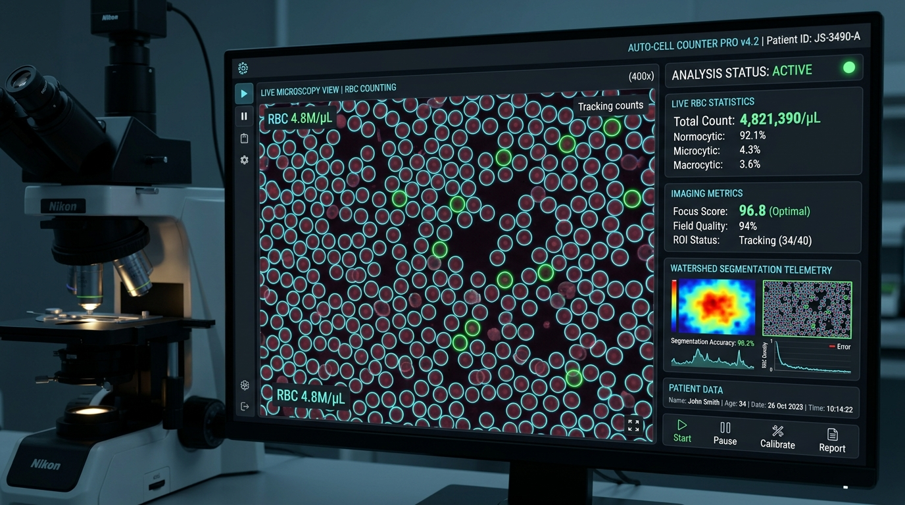

Este projeto é uma iniciativa científica e educacional de engenharia de software biomédico da Maurinsoft. O algoritmo de contagem automatizada por visão computacional encontra-se em fase de aprimoramento contínuo e validação comparativa contra métodos de referência (câmara de Neubauer / hemocitômetro) antes de homologação diagnóstica. Código-fonte aberto e aberto a parcerias de pesquisa.
Detecção e Contagem de Hemácias por Microscopia Óptica
Solução baseada em Python 3.10+, OpenCV e algoritmos avançados de segmentação celular (Watershed e transformada circular de Hough) para quantificação automática de glóbulos vermelhos em lâminas laboratoriais, integrada a um gerenciador web completo com API REST.

Pipeline Científico de Visão Computacional
Do sinal ótico analógico à quantificação celular validada em cinco etapas modulares.
Módulo hemacias/camera.py com descoberta automática de dispositivos USB, C-mount e webcams industriais.
Cálculo de nitidez por gradiente Laplaciano. O sistema só autoriza amostragem de frames acima do limiar de clareza.
Transformação de distância euclidiana e marcadores morfológicos para separar eritrócitos aglomerados com alta precisão.
Estabilização temporal de contagem entre múltiplos quadros sucessivos, eliminando artefatos e ruídos transitórios.
Ao pressionar tecla S, a imagem, contagem e metadados de magnificação são enviados ao gerenciador web seguro.
Arquitetura do Motor de Processamento em Tempo Real
O projeto foi refatorado para garantir código limpo, separando a captura de vídeo (`camera.py`), a computação visual (`counter.py`) e a interface gráfica de operação (`teste04.py`).
python teste04.py --method watershed --min-radius 15 --max-radius 35
# Listar câmeras disponíveis:
python teste04.py --list-videos
# Integração direta com servidor web de prontuários:
python teste04.py --api-url https://servidor/hemacias/web --api-key SUA_CHAVE --patient-name "Paciente Teste"
| Comando de Teclado 'Q' | Encerramento seguro do loop de vídeo e liberação do hardware de captura. |
|---|---|
| Comando de Teclado 'C' | Limpeza e reinicialização do buffer histórico de estabilização de frames. |
| Comando de Teclado 'S' | Disparo de persistência instantânea via API (imagem, coordenadas de hemácias e contagem). |
| Métodos Disponíveis | watershed (padrão para agrupamentos) e hough (círculos geométricos). |
Gerenciador Laboratorial Web PHP & MySQL
O diretório web/ contém uma aplicação web completa projetada para laboratórios de análises clínicas e centros de pesquisa biomédica:
Plano de Evolução Técnica & Validação Biomédica
A engenharia biomédica da Maurinsoft estruturou um roadmap rigoroso documentado em docs/PLANO_MELHORIAS.md para elevar o protótipo ao estágio de homologação clínica:
- Calibração Óptica com Lâmina Micrométrica: Conversão precisa de pixels para micrômetros (μm) de acordo com a objetiva ótica.
- Classificação Morfológica Celular: Diferenciação automática entre normócitos, microcitos, macrocitos e detecção preliminar de poiquilocitose.
- Validação Estatística em Câmara de Neubauer: Protocolo de testes cegos comparando a contagem manual por biomédico com a inferência do software.
- Integração com Sistemas LIS / HIS: Exportação de laudos estruturados nos padrões de laboratório clínico.